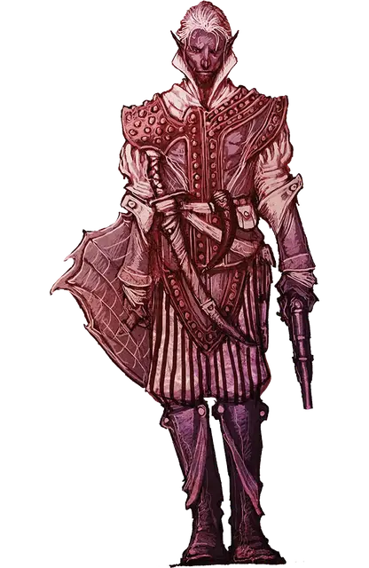

Дроу стрелок
Drow Gunslinger
Средний Гуманоид (Эльф), любое мировоззрение

Класс Доспеха 18 (проклёпанная кожа, щит)
Хиты 84 (13к8 + 26)
Скорость 30 футов
| мод | спас | ||
|---|---|---|---|
| СИЛ | 13 | +1 | +1 |
| ЛОВ | 18 | +4 | +6 |
| ТЕЛ | 14 | +2 | +4 |
| мод | спас | ||
|---|---|---|---|
| ИНТ | 11 | +0 | +0 |
| МДР | 13 | +1 | +3 |
| ХАР | 14 | +2 | +2 |
Навыки Восприятие +3, Скрытность +8
Чувства тёмное зрение 120 футов, пассивное Восприятие 13
Языки Подземный, Эльфийский
Опасность 4 (1100 опыта)
Бонус мастерства +2
Особенности
Наследие фей. Дроу стрелок совершает с преимуществом спасброски от очарования, и магия не может его усыпить.
Врождённое колдовство. Базовой характеристикой для врождённых заклинаний дроу стрелка является Харизма (Сл спасброска от заклинания 13). Он может накладывать следующие заклинания, не нуждаясь в материальных компонентах:
• Неограниченно: пляшущие огоньки [dancing lights]
• 1/день каждое: огонь фей [faerie fire], тьма [darkness], левитация [levitate] (только на себя)
Стрелок. Нахождение в пределах 5 футов от враждебного существа или атака в пределах максимальной дистанции не накладывает помеху на атаки дроу из пистолета. Кроме того, дальнобойные атаки дроу совершаемые из пистолета игнорируют укрытие на половину и укрытие на три четверти.
Чувствительность к солнечному свету. Находясь на солнечном свете, дроу стрелок имеет недостаток в бросках атаки, а также в проверках Мудрости (Восприятия), которые зависят от зрения.
Действия
Мультиатака. Дроу совершает две атаки коротким мечом.
Короткий меч. Рукопашная атака оружием: +6 к попаданию, досягаемость 5 футов, одна цель. Попадание: 7 (1к6 + 4) колющего урона.
Ядовитый пистолет. Дальнобойная атака оружием: +6 к попаданию, дистанция 30/90 футов, одна цель. Попадание: 9 (1к10 + 4) колющего урона плюс и 11 (2к10) урона ядом.
Описание
Огнестрельное оружие на Севере встречается нечасто, но членам Бреган Д’эрт удалось разжиться лантанскими пистолетами, пулями и мешочками дымного пороха. Эти трое дроу-стрелков — мастера стрельбы из пистолета.
Они палят из него так же метко, как хорошие лучники — из луков.